試せる実験 ・ 2026 年 11 月 28 日
画像を貼ると、プログラムが一筆ずつペン画に描き直す
作者が X で見つけたポスト 2 件では、AI が書いたプログラムが画像から線を拾い、一筆ずつ描き直していました。同じ種類の処理を、このページの中だけで動かせるかを試しました。下のプレーヤーに画像を入れると、プログラムが線を起こし、筆の順番を決めて、一筆ずつ描きます。
生成 AI は使っていません。使っているのは昔からある画像処理と、Claude が書いた JavaScript だけです。画像はこのブラウザの中で処理し、どこにも送りません。
IPPITSU一筆ずつ描くペン画
線を起こしています…
プレーヤーの中では、スペースキーで再生と一時停止、→ キーで 1 筆進む、Home キーで最初から、End キーで描き上がりです。「線の細かさ」「陰影の量」「陰影の描き方」を変えると、線を起こし直します。「陰影の描き方」は、人の斜線（既定）・漫画原稿（線・ベタ・トーン）・点描・点描だけ（主線なし）・ベタと点描・ベタと点描だけ（主線なし）・ベタだけ・格子から選べます。下の帯の「表示」で、主線・ベタ・点描・斜線・トーンの層を、描き上がってからでも出したり消したりできます。「格子」は最初に作った斜線の方式です。
元になったポスト
- 榊正宗さんのポスト（2026 年 11 月 26 日）: AI で生成した線画から線を拾い、描き順をプログラムが組み立てるツールの紹介です。取り出した 1 本の線には、始点・終点・途中の座標・線幅が残っています。囲まれた所へのトーン貼りや、光の向きに合わせた前髪の影の変更も紹介されています。
- 新清士さんのポスト（2026 年 11 月 27 日）: Gemini 4 Neon を使って、画像をペン画風にプログラムが描き直すツールを作ったという紹介です。透過 PNG で書き出せて、筆の動きも模しています。
作者の問いは「適当な画像を貼り付けたら線画にして、一筆ずつ線が引かれる様子を見られる物を、HTML・CSS・JavaScript だけで作れるか」でした。2 件のツールのコードは公開されていないため、このページはそれを見ていません。画面の配置もまねず、同じ目的の物を別に作りました。
何をしているか
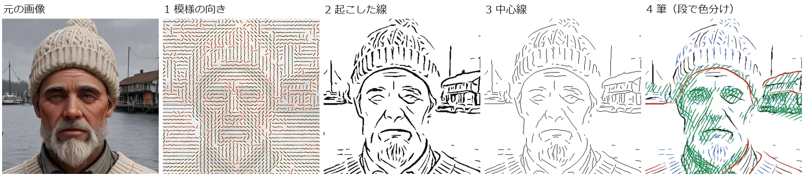
- 線を起こす写真やイラストでは、まず「模様の向き」を求めます。画素ごとに明るさが変わる向きを調べ、それに直交する向きを線の流れとします。次に、明るさが変わる向きに沿って差分ガウス（DoG）をかけ、周りより暗くて細い所を見つけます。この値を線の流れに沿ってならすので、線が途切れにくくなります。Kang らが 2007 年に発表した「流れに沿った DoG」の考え方です。白地に黒い線の絵は線が既にあるので、大津の方法で決めたしきい値より暗い所をそのまま使います。
- 筆に分ける線を 1 画素の太さまで削り（細線化）、中心線を残します。中心線の各点から一番近い白までの距離で、線幅を測ります。中心線を端点と分かれ目で枝に分け、分かれ目では向きが続く枝どうしをつなぎます。十字の交わりは 2 本の筆に、T 字は横棒と縦棒の 2 本の筆になります。
- 斜線を足す（写真とイラストだけ）暗い所に、平行な線の束で斜線を引きます。1 段目は「/」の向き（60°）にそろえ、髪のように模様の流れがはっきりした所だけ形に少し沿わせます。もっと暗い所には 1 段目を 55° 回した 2 段目を重ね、最も暗い所は 1 段目と 2 段目の線の間に線を足します。暗い所ほど線を太く、間を詰めます。斜線は長い輪郭を越えません。人の描き方に寄せた理由と比べた結果は、下の「斜線を人の描き方に近づけた」に書きました。「陰影の描き方」で「点描」を選ぶと、斜線の代わりに点を打ちます（下の「点描でも描けるようにした」）。
- 順番を決めて描く写真とイラストは「長い輪郭 → 中くらいの線 → 短い線 → 斜線」、線画は「外周 → 長い線 → 短い線」の順に描きます。輪郭の段の中では、いまのペン先から一番近い筆を選び、近いほうの端から描き始めます。斜線は、1 段目を全部描いてから 2 段目・3 段目を描き、束の中は端の線から隣へ順に、上の端から引き下ろす向きで描きます。筆の始めと終わりを細くして、ペンの入りと抜きに見せています。
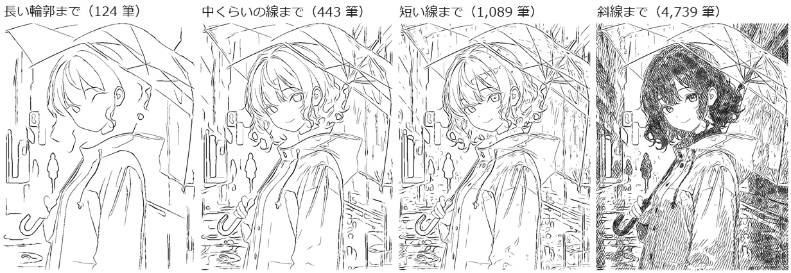
斜線を人の描き方に近づけた
最初の版を触った作者から「ハッチングが自然ではない。四角形をぐりぐり描いて陰影を付けているように見える」と言われました。人が描くハッチングは、斜めの線を組み合わせて陰影を表します。そこで、デッサンやペン画のハッチングの描き方を調べ、それに合わせて斜線の作り方を変えました。
最初の版で四角に見えた理由
- 2 段目の斜線を、1 段目と直角（90°）に重ねていました。直角に交わる線は、網目のような四角に見えます。
- 斜線の段の中で、ペン先に近い線から順に描いていました。1 段目と 2 段目の線が混ざって並ぶので、向きの違う短い線を交互に描き、小さな四角を描き足すような動きになっていました。続けて描く 2 本の斜線の半分ほどが、向きを 30° 以上変えていました。
調べたこと
- 平行な線の束が単位: ハッチングは「ほぼ平行な線のまとまり」で、複雑な形はいくつかの束に分けて描きます（Philbrick と Kaplan の論文）。1 つの区画の中では、線の向きをそろえます。
- 向き: 右利きの人は「/」の向きの線が描きやすいとされます。背景まで同じ向きにそろえると落ち着いた絵になり、丸い形には形に沿って曲がる線（コンター・ハッチング）を使います。
- 重ねる角度: 多くの解説が、2 段目を直角に重ねると格子のように見えて機械的になると書いています。30〜45° くらいずらして、間にひし形ができるように重ねるのがよいとされます。段ごとに角度を少しずつ回すとも書かれています。
- 暗さの出し方: 線の間隔を詰める、段を重ねる、線を太くする、の 3 つで暗くします。線は暗い所で太く、明るい所へ向かって細くなります。明るい所は無理に埋めず、紙の白を残します。
変えたこと
- 影の中に最初の線を引き、そこから線の間隔だけ横にずらした所に次の線を引きます。これを行き止まりまで続けて、1 つの束を作ります。描くときは、束の端の線から反対の端の線まで、隣へ順に描きます。
- 1 段目は「/」の 60° にそろえ、模様の流れがはっきりした所だけ流れに少し沿わせます。2 段目は、1 段目の向きを 55° 回して重ねます。1 段目が曲がる所では一緒に曲がるので、どこでも約 55° で交わり、直角の格子にはなりません。
- もっと暗い所（3 段目・4 段目）は、3 つ目の向きを足さず、1 段目と 2 段目の線の間に同じ向きの線を足して暗くします。
- 束と束の間に白い筋を残さないよう、線の長さと中心の位置を線ごとにずらし、線の先端のそばには隣の束の線も入れるようにします。最後に、まとまって空いた所だけに短い線を足します。
- 暗い所ほど線を太くし、間隔を詰めます。束の縁は線ごとに少しずつずらし、輪郭のように切りそろえません。
- 長い輪郭の線を壁にして、斜線が輪郭を越えないようにします（論文の「barrier curve」と同じ考え方）。
- 1 段目を全部描いてから 2 段目、3 段目を描きます。線は上の端から引き下ろし、入りを短く、抜きを長く細くします。
この作り方は、伏せた見比べを挟みながら 3 版かけて決めました。見比べは、どれが新しいかを伏せたまま、別の目（Claude のサブエージェント）に絵だけを見てもらう形です。
- 1 版目前の方式と比べてもらうと、人のハッチングらしさと明暗の読みやすさは、見本 3 枚とも新しい方式が選ばれました。欠点は 4 つ指摘されました。最も暗い所で 3 つの向きが三角の網目になり金網のように見える、斜線が輪郭を越える、平らな壁の線がうねる、小さな束が継ぎはぎに見える、の 4 つです。
- 2 版目3 段目を「間を埋める段」に変え、長い輪郭を壁にしました。流れに沿わせるのは向きがはっきりした所だけにし、束ごとの向きのぶれを ±4° から ±2.5° に減らしました。1 版目と比べると、手描きらしさは 3 枚とも 2 版目が上でした。一方で、明暗の読みやすさは 3 枚とも 1 版目が上でした。最も暗い所が暗くなりきらず、広い暗い面（生け垣）では束の間の白い筋が大きなひし形の柄に見えました。
- 3 版目（いまの版）2 段目の線の間を埋める 4 段目を足して、暗い所を暗くしました。束の間の白い筋は、線の長さと中心をずらし、先端のそばに隣の線が入れるようにし、最後にまとまった隙間を埋めて減らしました。生け垣で 1 段目の線から 4px より離れた所は 3.6% から 2.0% になり、明暗の相関も上がりました。
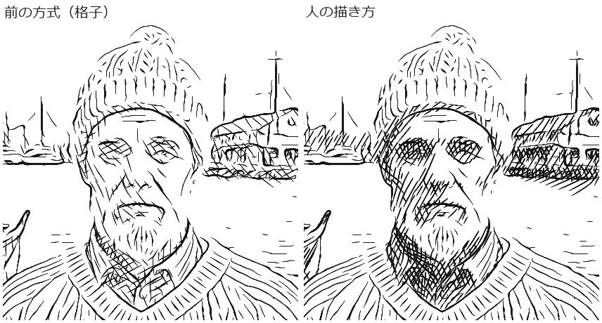
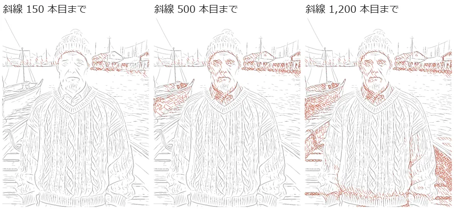
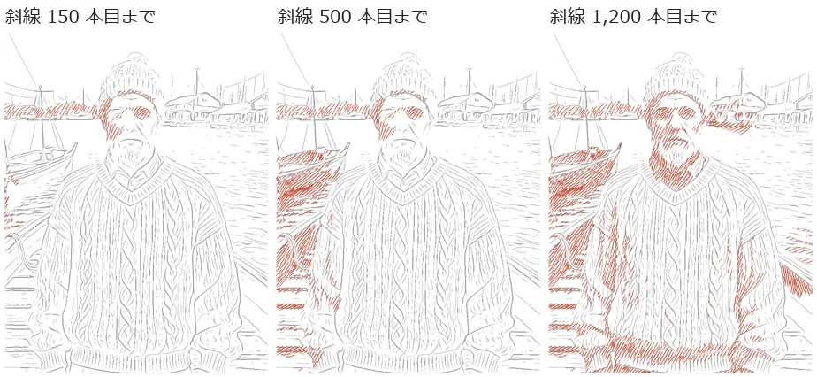
比べた数字
写真風の見本 3 枚で、斜線を描く順に並べて測りました。「明暗の相関」は、描き上がった絵と元の画像をどちらもぼかしてから比べた値で、1 に近いほど明暗が合っています。
| 見本 | 方式 | 続く 2 本の向きの差（中央値） | 向きが 30° 以上変わる割合 | 直角に近い交差（75° 以上） | 明暗の相関 |
|---|---|---|---|---|---|
| 港の漁師 | 格子 | 45° | 61% | 33% | 0.69 |
| 港の漁師 | 人の描き方 | 2.4° | 4.1% | 4.3% | 0.86 |
| 雨の街 | 格子 | 19° | 47% | 62% | 0.57 |
| 雨の街 | 人の描き方 | 2.4° | 2.7% | 1.9% | 0.82 |
| 猫の目線の通り | 格子 | 45° | 55% | 50% | 0.41 |
| 猫の目線の通り | 人の描き方 | 1.1° | 1.9% | 1.2% | 0.83 |
人の描き方では、続けて描く 2 本の線の向きがほぼ同じになり、直角に近い交差は 1〜4% まで減りました。明暗の相関も、3 枚とも 0.82〜0.86 に上がっています。斜線の本数は 1.7〜1.9 倍に増えますが、処理の時間は前とほぼ同じです。速さ ×1 で描き上がるまでの時間は、筆の数によらず約 45 秒です。
伏せた見比べ（3 回目）
最後に、前の方式・2 版目・3 版目の 3 つを、どれがどれかを伏せて並べ、見本ごとに順位を付けてもらいました。
| 見本 | 人のハッチングらしい順 | 明暗が読み取りやすい順 | 総合でいちばん良い |
|---|---|---|---|
| 港の漁師 | 2 版目 ≧ 3 版目 ＞ 前の方式 | 3 版目 ＞ 2 版目 ＞ 前の方式 | 3 版目 |
| 雨の街 | 2 版目 ＞ 3 版目 ＞ 前の方式 | 3 版目 ≧ 2 版目 ＞ 前の方式 | 2 版目（3 版目との差は小さい） |
| 猫の目線の通り | 3 版目 ＞ 2 版目 ＞ 前の方式 | 3 版目 ＞ 2 版目 ＞ 前の方式 | 3 版目 |
前の方式は、3 枚ともどちらの点でも最下位でした。理由は「正方形や三角の格子が網戸や布の模様のように見える」「短い線が散らばってハッチングの束に見えない」「全体が薄く明暗が読めない」というものでした。3 版目は 3 枚のうち 2 枚で総合 1 位、残る 1 枚でも 2 位だったので、3 版目をプレーヤーの既定にしました。雨の街で 2 版目が選ばれた理由は、3 版目では髪の最も暗い所で線が詰まり、塗りつぶしに近くなるためです。
見比べ役は Claude のサブエージェントで、人の目ではありません。最後に判断するのは、このページを見る人の目です。
点描でも描けるようにした
斜線のハッチングを確かめた作者から、「この技術を応用して、水木しげるの点描のような描写を再現できないか」と頼まれました。水木しげるさんの点描と、一般的な点描（スティップリング）の描き方を調べ、陰影を点で描く方式を足しました。プレーヤーの「陰影の描き方」で「点描」を選ぶと使えます。このサイトは既存の作品をまねない決まりなので、水木作品の絵そのものは写していません。調べたのは点描という技法で、見本は今までと同じ自前の画像です。
調べたこと
- 水木作品の点描の打ち方: 『水木しげる漫画大全集』を監修した京極夏彦さんは、デジタル修正のとき、水木プロのチーフアシスタントだった村澤昌夫さんから点描の打ち方を教わったそうです。点は約 5mm 角のマスで区切って打ち、マスごとに仕上げて全体を完成させます。点を不規則にばらばらに打つのは、水木流ではないとされています（メディア芸術カレントコンテンツのインタビュー）。
- 時代による変化: 貸本時代は斜線による陰影が中心で、点描は後年に多くなり、粒も細かくなったと解説されています（模写による解説）。細密画のような背景に点描が多く使われています。
- 一般的な点描: 明暗は点の大きさではなく密度で出します。同じ区画では同じ太さのペンを使い、ペンを紙に垂直に立てて丸い点を打ちます。点を線や輪の形に並べず、固まりも隙間も作らず、同じ明るさの所は同じ密度にそろえます。
- コンピューターの研究: Secord の「Weighted Voronoi Stippling」（2002）は、明暗に合わせて点を均等に散らします。固まりも隙間も無いこの並びは「ブルーノイズ」と呼ばれ、手で丁寧に打った点描に近い並びです。
作り方
- 明るさから「点で覆う割合」の目標を決めます。明るい所は打たずに紙の白を残し、暗い所ほど割合を上げます。
- 点の大きさはほぼ一定（1,000px の画像で直径約 1.6px、手で打つぶれとして ±18%）にし、密度で明暗を出します。最も暗い所だけ、点を最大 1.4 倍まで大きくして黒に近づけます。
- 点どうしの最小距離を目標から計算し、候補の点をばらばらの順に試して、近くに点が無い所にだけ置きます（ポアソンディスク・サンプリング）。点は固まらず、均等に散ります。最小距離にも ±8% のぶれを入れ、並びがそろいすぎないようにします。
- 画像を約 5mm 角（1,000px の画像で約 28px）のマスに分け、マスごとに打ち終えてから隣のマスへ移ります。マスの中心は格子から少しずつずらしてあり、マスの縁は縦横の直線になりません。マスの中は、近い点へ順に打ちます。
- 輪郭は線のまま描きます。水木作品も、強弱のある線と点描を組み合わせています。
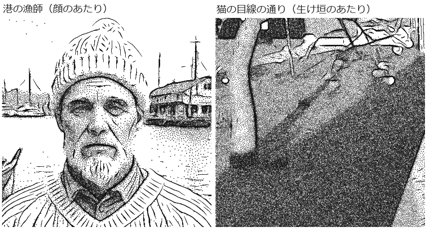
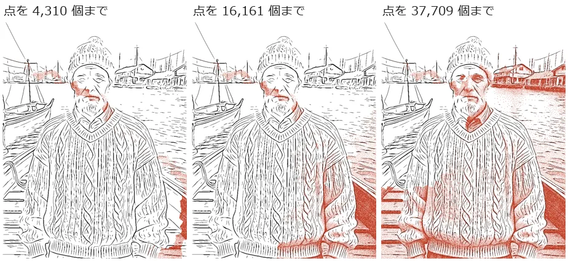
確かめた結果
明暗の相関（描いた絵と元の画像をぼかして比べた値）は、港の漁師 0.95、雨の街 0.94、猫の目線の通り 0.94 で、人の斜線（0.82〜0.86）より高くなりました。点が細かいので、明暗を細かく写せます。点の数は見本 1 枚で 5 万〜10 万個、処理の時間は約 1.5〜2 秒です。
点の並びの均等さも測りました。比べる相手は、同じ明暗の目標・同じ数の点を、ランダムな位置にばらばらに打った点描です。「一番近い点までの距離」のばらつき（変動係数。小さいほど間隔がそろう）は、この方式が 0.25〜0.45、ばらばらに打った点描が 0.60〜0.79 でした。
斜線のときと同じように、どちらかを伏せて見比べてもらいました（相手は、ばらばらに打った点描）。港の漁師と猫の目線の通りの 2 組とも、手で打つ点描らしさと明暗の読みやすさの両方で、この方式が選ばれました。ばらばらに打った点描は「点がくっついて短い線や固まりになり、間に白い穴ができて、写真の粒子のように見える」と評されています。打ち進める様子も、「1 か所を仕上げてから隣へ移る」この方式のほうが人に近いと判定されました。
一方で、この方式にも欠点が 2 つ挙がりました。打っている途中、マスの縁がまっすぐな縦横の線になり顔の輪郭を横切ること、点の大きさと間隔がそろいすぎて最も暗い所が一様な灰色の網に見えることです。マスの中心をずらして縁を不揃いにし、点の大きさと間隔にぶれを入れ、最も暗い所の点を大きくしました。直したあとの版は、まだ伏せた見比べにかけていません。
点描だけ（主線なし）と、ベタと点描
点描を確かめた作者から、さらに 2 つのモードを頼まれました。「主線をなくして点描だけで描くモード」と、「ベタ（黒く塗りつぶした所）と点描を組み合わせたモード」です。後者は「黒い所はちゃんと黒く、陰影は点描で表す」もので、水木作品の点描にだいぶ近い表現になるはずだ、という話でした。
- 点描だけ（主線なし）: 輪郭の線を描かず、点だけで描きます。点描の解説にある「形の縁は線で囲まず、点の密度で表す」に合わせて、明暗の差を少し強め（アンシャープマスク）、起こした線の位置では点を少し密にしています。輪郭は、点の並びとして浮かび上がります。
- ベタと点描: 最も暗い面をベタにし、その手前の明暗を点描で表します。ベタの中には点を打ちません。模写の解説に「ベタは筆で大まかに塗った後、G ペンで整えている」とあるので、描く順も「線 → 筆でベタ → ペンでベタの縁を整える → 点描」にしました。筆は、ベタの内側を太い線で斜めに往復して塗ります。ペンは、筆で塗り残した縁の細い帯を細線化した線です。小さな黒い点はベタにせず、ベタの中の小さな白い穴は埋めます。
さらに、「ベタだけ」と「ベタと点描だけ（主線なし）」のモードも頼まれて足しました。「ベタだけ」は主線も点描も描かず、黒く塗る面だけを描きます。切り絵や影絵のような絵になります。
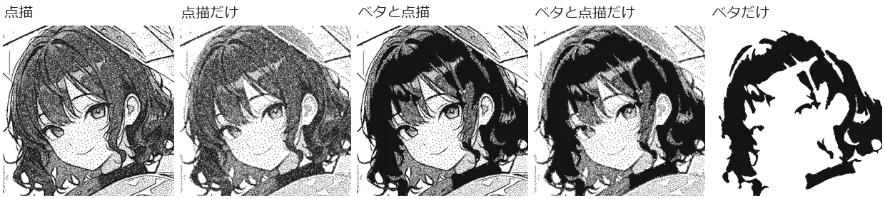
描き上がってから、層ごとに表示を切り替える
描いた絵は、「主線」「ベタ」「点描」「斜線」「トーン」の 5 つの層に分かれています。プレーヤーの下の帯の「表示」のチェックで、層ごとに表示と非表示を切り替えられます。描いていない層のチェックは押せません。描いている途中で層を消すと、その層の筆は描かずに進みます。PNG と SVG の書き出しも、表示している層だけになります。たとえば「ベタと点描」で描いてから点描を消すと、主線とベタだけの絵になります。
明暗の相関は、点描だけが 0.94〜0.95 で、線ありの点描とほぼ同じでした。ベタと点描は 0.86〜0.93 で少し下がります。ベタは暗い所を元の画像より黒く強調するので、これは狙いどおりの変化です。処理の時間は、どちらも約 1.5〜2.2 秒です。
漫画原稿として描く
公開のあと、作者から「漫画原稿の再現もできたら面白い」と頼まれました。漫画原稿は、G ペンで線を引き、ベタを塗り、スクリーントーンで陰影やグラデーションを表します。条件は 2 つでした。1 つは、それまでのモードでは線とベタだけだと絵として成立しなかったので、漫画原稿では線とベタだけでも成立する密度と精度にすること。もう 1 つは、精密な所は細く、力強いカーブは太く、G ペンのタッチが感じられる線にすることです。「陰影の描き方」で「漫画原稿（線・ベタ・トーン）」を選ぶと使えます。
調べたこと
- ペン入れ: 顔や体の輪郭、影の側、角は太く、輪郭の内側の細部（髪の毛束、服のしわ、模様）や光の当たる所は細く引くのが基本だと、多くの解説が書いています。
- トーン: 漫画では 60 線前後の網点のトーンが中心です。10% は肌の影や髪のつやなど薄い影、20〜30% は濃い色の服や影の中の暗い所に使い、空や背景の奥行きにはグラデーショントーンを使います。
- 手順: ペン入れ → ベタ → トーンの順に仕上げます。
作り方
- 線をつなぐ・引き直す: 写真の明暗の境目から拾った線は細切れで、画素をたどった数 px の波も残っています。端どうしのすき間が小さく、向きがそろう線だけをつないで長い線にします。そのあと、波を落として要所の点だけを残し、なめらかな曲線に引き直します（ならす → Ramer-Douglas-Peucker で点を間引く → Chaikin の角切り）。短くて弱い切れ端は描きません。
- G ペンの強弱: 線ごとの太さを、境目の強さ・線のまわりの暗さ・線の長さで決めます。境目の強さは、大きくぼかした絵でも残る境目（人や物の外形）を重く数えます。セーターの模様のような細部はぼかすと消えるので、細い線になります。1 本の線の中では、大きなカーブのふくらみで太り、長い線は真ん中が少しふくらみます。始めと終わりは、なだらかに細くとがります（入りは短く、抜きは長く）。
- ベタ: 暗い面のうち、大きなまとまりだけをベタにします。目のくぼみのような小さな暗い所は、ベタにせずトーンで表します。面の縁をならしてから、その輪郭（マーチングスクエアで取り出した多角形）の形で塗りつぶすので、はみ出しも塗り残しもありません。描く様子は、筆で内側を塗り進めてから、輪郭の形で縁を整える順です。
- トーン: 中間の明るさを、45° の格子に並んだ網点で表します。濃さは 10・20・30% の段にそろえ、境目をならして「影のトーン」にします。細かい模様が無く、明るさがなだらかに変わる広い所は、網点の大きさが少しずつ変わる「グラデーショントーン」にします。トーンを貼り始める明るさは画像ごとに決め、暗めの絵でも肌などの明るい所は白く残します。トーンは点を 1 つずつ打たず、区切った面ごとに 1 枚ずつ貼ります。
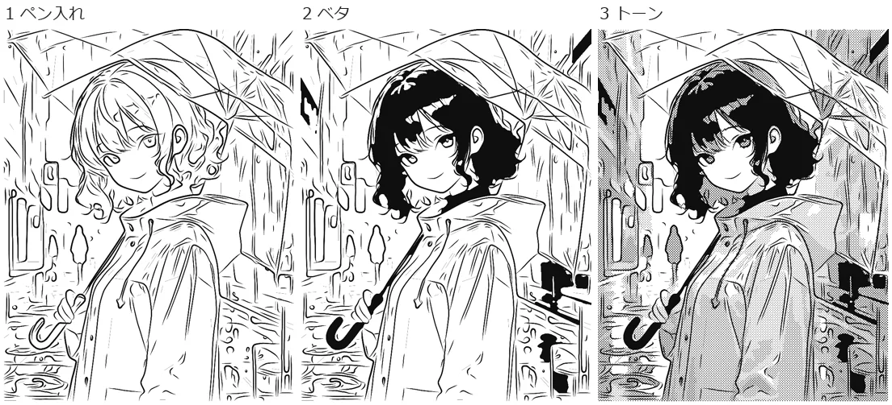
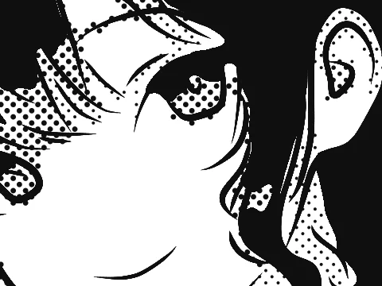
描き上がってから「表示」でトーンを消すと、線とベタだけの絵を確かめられます。処理の時間は約 2〜2.6 秒です。
伏せた見比べ
線とベタだけの絵を、前の版（「ベタと点描」から点描を外したもの）と漫画原稿で並べ、どちらかを伏せて見比べてもらいました。見本 3 枚とも、「線とベタだけで絵として成立している」と「ペン入れらしい」の両方で、漫画原稿が選ばれました。理由は、線が長くつながり、ベタが大きなまとまりになり、細かい断片が少ないことでした。細かい黒の断片は、前の版の約半分から 3 分の 1 でした。差がいちばん大きかったのは雨の街です。
一方で、2 つの欠点も挙がりました。1 つは、表示の大きさでは G ペンらしい入りと抜きやカーブで太る線があまり見えないこと、もう 1 つは、ベタの縁に細かいこぶが付くことです。入りは最大 16px、抜きは最大 30px までなだらかに細くし、長い線は真ん中を少しふくらませました。ベタは面の縁を広めにならし、縁を整えるペンの道筋と太さもならしています。直したあとの版は、まだ伏せた見比べにかけていません。
線の迷いと、ベタの雑さを直した
作者が手元で確かめると、2 つの指摘がありました。1 つは「線がふにゃふにゃしていて、自信なく引いたように見える。もっときれいに入り抜きして、きっちりした線に」。もう 1 つは「ベタが雑で、はみ出しや塗り残しが多い」です。
- 線が迷って見えた理由: 線の道筋は画素をたどったもので、数 px の波が残っていました。そのうえ太さを「曲がり具合」で変えていたので、波の所で太さも揺れ、ためらって引いた線に見えていました。道筋を引き直してなめらかな曲線にし、曲がりは大きくならした道筋から測り、太さもならしました。入り抜きは、先端が 0.15px までとがるようにしました。
- ベタが雑だった理由: ベタを、太い筆と細いペンの線を重ねて塗っていました。線の丸い端が外へはみ出し、線と線の間に隙間が残っていました。面の輪郭を多角形として取り出し、その形で塗りつぶす作りに変えました。テストでは、はみ出しが 0 画素、塗り残しが 0.5% 未満です。ほかのベタのモードも同じ作りになりました。
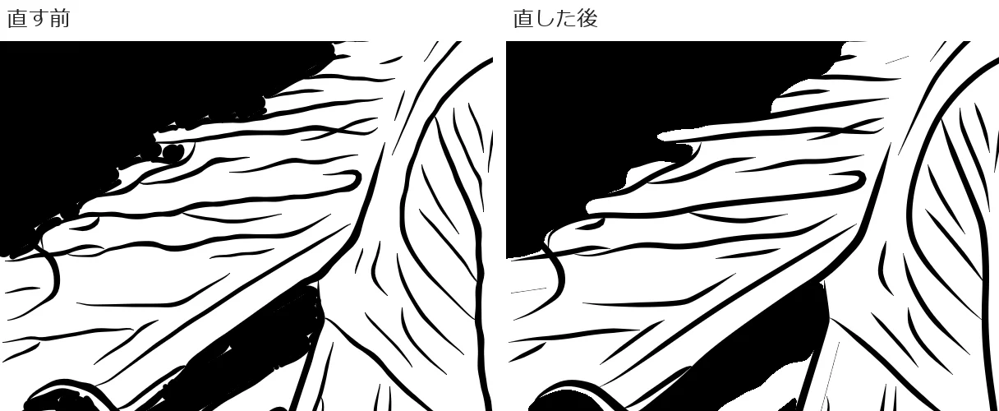
直す前と直した後を、どちらかを伏せて見比べてもらいました（港の漁師の顔・舟・セーターの 3 か所）。線の揺れ、太さのこぶ、細かい切れ端は、3 か所とも直した後のほうがはっきり少ないと判定されました。ベタも、直す前にあったこぶの並んだ縁と内側の白い塗り残しが、直した後では無くなっていました。一方で、直した後には「灰色で太さが一定の、ごく細い線」が新しく出ていると指摘されました。弱い境目の線が 1px より細くなり、黒くならずに灰色に見えていたためです。線の胴の細さの下限を 1px に上げ、細い線も黒く引くようにしました（入り抜きの先端は細いまま）。下限を上げたあとの版は、見比べにかけていません。
見比べ役は Claude のサブエージェントで、人の目ではありません。
測った数字
このパソコン（CPU は AMD Ryzen 5 3500）の Chrome で、見本 4 枚を処理した時間です。画像は長い辺を 1,000px にそろえてから処理します。処理は画面とは別のスレッド（Web Worker）で行うので、その間も画面は止まりません。時間の大半は、模様の向きを求める所（約 0.3 秒）、線を起こす所（約 0.4 秒）、斜線を置く所（約 0.6〜1 秒）です。線画はこの 3 つを通らないので、0.2 秒ほどで済みます。速さ ×1 では、どの見本も約 45 秒で描き上がるように、ペンの速さを線の長さの合計から決めています。
| 見本 | 大きさ | 種類 | 筆の数 | うち斜線 | 処理の時間 |
|---|---|---|---|---|---|
| 港の漁師 | 778×1000 | 写真・絵 | 3,564 | 2,286 | 約 1.8 秒 |
| 雨の街 | 778×1000 | 写真・絵 | 4,725 | 3,643 | 約 2.3 秒 |
| 階段の少年 | 778×1000 | 線画 | 416 | 0 | 約 0.2 秒 |
| 猫の目線の通り | 1000×562 | 写真・絵 | 5,307 | 4,637 | 約 1.3 秒 |
うまくいかないこと
- 目から描く順番にはできません。線画にも写真にも「どこが目か」という情報が無いためです。プログラムが読めるのは、線の長さ、囲みの入れ子、明るさだけです。顔の部品の位置を知るには、顔を見つける学習済みのモデルを使うか、人が絵ごとに印を付ける必要があります。
- 写真から起こす線は、絵を描く人が選ぶ線とは違います。明るさの変化をすべて拾うので、模様や光の反射も線になります。逆に、明るさが近い境目（白い服と白い壁など）は線になりません。何を描いて何を省くかを決めるには物の形を知る必要がありますが、この処理は形を知りません。
- 最も暗い所は、線が詰まって黒い塊になります。斜線の段は暗さだけで決めているので、黒髪のつやは表しきれません。雨の街の髪のような暗い所では、塗りつぶしに近くなります。気になるときは「斜線の量」を下げてください。髪の流れには 1 段目が少し沿いますが、人が描くように面の向きを考えて束を分けることはしていません。
- 束の継ぎ目は、まだ少し見えます。広い暗い面では、束と束の境目に細い白い筋や、向きの違う線の重なりが残る所があります。
- 点描は点の数が多く、描き上がりまでの間は筆の数の表示が大きくなります。見本 1 枚で 5 万〜10 万個の点を打ちます。SVG に書き出すと数 MB になります。真っ黒にしたいときは「ベタと点描」を選んでください。
- どこをベタにするかは暗さだけで決めています。人のように「この面は黒く締める」と選んではいないので、暗い背景が大きな黒い面になることがあります。
- 斜線の向きは「/」が基本です。右利きの人が描きやすい向きに合わせています。光の向きや面の傾きから束ごとに向きを変える描き方は、物の形を知らないとできないので、していません。
- 光の向きで影を変えることはしていません。榊さんのポストにある「光の向きに合わせて前髪の影を変える」には、どのパーツがどこに影を落とすかの情報が要ります。2D の画像からはそれが分からないので、今回は扱っていません。
- 顔が小さく写った画像では、線がつぶれます。長い辺を 1,000px にそろえるため、目や口が数画素の大きさになり、細線化で形が崩れます。
プログラムが描いたことの印
書き出した PNG には、プログラムが描いた線画であることを、画像の説明（PNG の iTXt）として書き込みます。SVG にも同じ文を desc 要素に入れています。書き出した絵を、手で描いた絵として発表しないでください。
作った過程
- 線画だけで試作して測った最初は、線が既にある白黒の線画で試しました。1,352×1,308px の線画を 0.3〜0.4 秒で筆に分け、描き直した線は元の線の 98.5% を 1px 以内で覆いました。
- 写真では、線が途切れて順番が崩れた写真に普通の DoG をかけると、輪郭が途中で切れました。外の白が人物の内側まで入り込み、「外周 → 囲み」の順番が働きませんでした。そこで、流れに沿った DoG に替え、写真には長さで決める順番を使いました。
- 斜線がジグザグになった最初の斜線は模様の向きにそのまま沿わせたため、向きがばらばらの短いジグザグになりました。決まった向きを基本にし、明るい段だけを形に少し沿わせ、向きの変わり方をなめらかにしました。
- 斜線が四角を描くように見えた作者が触って「四角形をぐりぐり描いているよう」と指摘しました。ハッチングの描き方を調べ、平行な線の束を隣へ順に描く方式に作り替えました（上の「斜線を人の描き方に近づけた」）。作り替えの途中では、2 段目と 3 段目が互いに直角で交わり、直角に近い交差が港の漁師で 40% 残りました。3 つの向きを約 60° ずつに配置し直し、2 段目と 3 段目も 1 段目と一緒に曲がるようにして、4% まで減らしました。そのあと、伏せた見比べを挟みながら 3 版目まで直しました（上の「斜線を人の描き方に近づけた」）。
- 点描を足した作者から水木しげるさんのような点描の再現を頼まれ、水木プロの点描の打ち方の証言と、一般的な点描の技法を調べて足しました（上の「点描でも描けるようにした」）。最初の版は中間の明るさまで点で埋まり、全体が灰色のスクリーントーンのように見えました。明るい所は白く残し、暗い所に点を集めるように直しています。
- 点描だけ・ベタと点描を足した作者から 2 つのモードを頼まれて足しました（上の「点描だけ（主線なし）と、ベタと点描」）。ベタは最初、しきい値が低くて髪の暗い所がほとんど点描のままだったので、少し上げています。
- ベタだけ・ベタと点描だけ・層の表示の切り替えを足した作者から頼まれて足しました（上の「描き上がってから、層ごとに表示を切り替える」）。確かめの台本では、ベタを消しても暗い画素が減らないように見えたことがありました。調べると、紙の画素を何度も読み出したあと、Chrome がキャンバスの描き方を切り替えて、細い点や線のふちの灰色が増えていました。描いた中身は同じだったので、台本の数え方を、ふちの影響を受けない「真っ黒な画素」に直しています。
- 漫画原稿を足した作者から漫画原稿の再現を頼まれて足しました（上の「漫画原稿として描く」）。最初の版は、港の漁師の目のくぼみがベタになってゴーグルのように見え、セーターの模様の線が太すぎ、雨の街の頬にトーンが乗っていました。ベタにする面の大きさの下限を上げ、線の太さに「大きくぼかしても残る境目か」を加え、トーンを貼り始める明るさを画像ごとに決めるように直しました。
- テスト線を起こす処理、斜線（2 つの方式。束の継ぎ目の隙間も含む）、点描、ベタ、漫画原稿の線とトーン、輪郭で塗るベタ、順番、入り抜き、書き出しを、74 件のテスト（node --test）で確かめています。画面は、画面なしの Chrome で動かす 45 項目の台本で確かめています。ライブラリは使っていません。
見本の画像
- 港の漁師・雨の街・階段の少年は、このパソコンの ComfyUI で作った画像です。実在の人物や、既存のキャラクターではありません。チェックポイントと seed: 港の漁師は perfectdeliberate_v90（seed 240611）、雨の街は waiIllustriousSDXL_v170（seed 515151）、階段の少年は同じく waiIllustriousSDXL_v170（seed 727272）。
- 猫の目線の通りは、このサイトの実験レポート「野良猫の目線の 30 秒」で Blender で描いた 1 コマです。
出典
- Henry Kang, Seungyong Lee, Charles K. Chui. Coherent Line Drawing. NPAR 2007.（流れに沿った DoG）
- Bruno Jobard, Wilfrid Lefer. Creating Evenly-Spaced Streamlines of Arbitrary Density. 1997.（斜線の間隔のそろえ方）
- Greg Philbrick, Craig S. Kaplan. A Primitive for Manual Hatching. 2021.（平行な線の束を単位にする考え方、向きを回して重ねるクロスハッチング、画像の明暗から線幅を決める方法）
- Georges Winkenbach, David H. Salesin. Computer-Generated Pen-and-Ink Illustration. SIGGRAPH 1994.（暗さに合わせて線の段を足していく考え方）
- Adrian Secord. Weighted Voronoi Stippling. NPAR 2002.（点を明暗に合わせて均等に散らす点描）
- 『水木しげる漫画大全集』制作秘話――監修・京極夏彦インタビュー（後編）（メディア芸術カレントコンテンツ。点描を 5mm 角のマスで区切って打つ話）、マンガのスコア LEGEND29 水木しげる（時代による点描の変化）
- 点描の描き方の解説: ArtTechniques、Chris Wilson Studio、Stippling（Wikipedia）
- ハッチングの描き方の解説: Tom Richmond（直角の重ねを避ける）、ArtTechniques（重ねる角度）、Love Life Drawing（平行・交差・形に沿うハッチング）、CLIP STUDIO TIPS（2 層目は 90° ではなく 30° ほど変える）
- T. Y. Zhang, C. Y. Suen. A Fast Parallel Algorithm for Thinning Digital Patterns. 1984.（細線化）
- Pedro F. Felzenszwalb, Daniel P. Huttenlocher. Distance Transforms of Sampled Functions. 2012.（線幅を測る距離変換）
- 大津展之. 判別および最小 2 乗基準に基づく自動しきい値選定法. 1980.（線画のしきい値）
この実験のコードと文章は Claude（Anthropic）が書き、作者が確かめています。実験レポートの一覧へ戻る